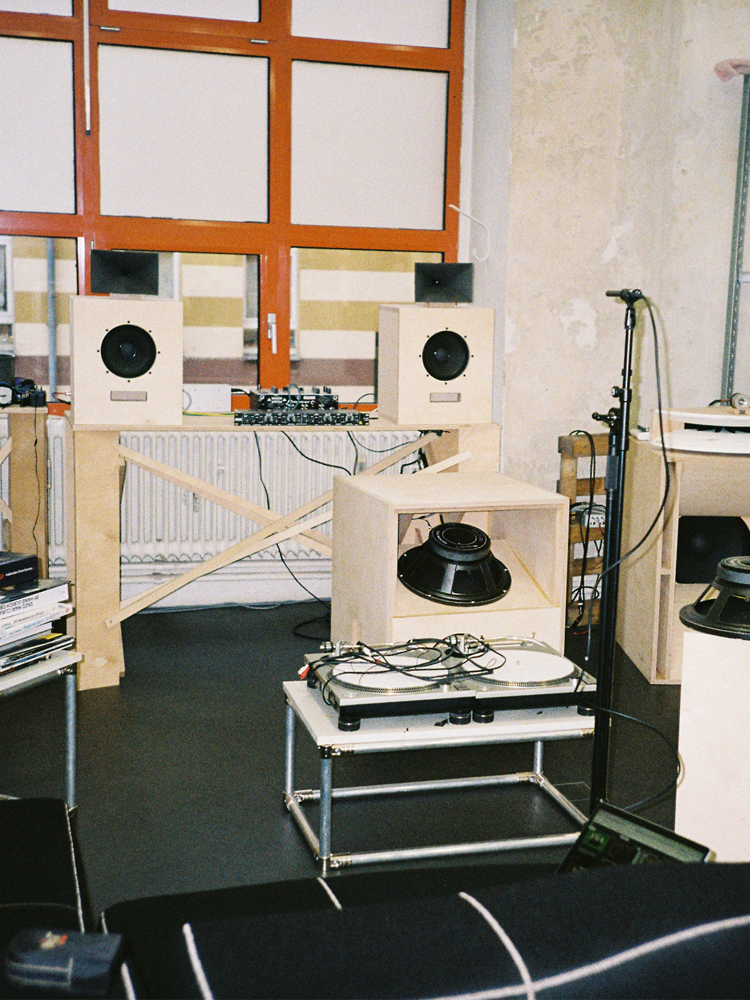

LUKAS HARTMANN
Hardware research, engineering and design.
Based in Berlin.
KORG Germany GmbH | Hardware Developer
Technische Universität Berlin | MSc Audiocommunication
Trinity College Dublin | BSc Physics
hello@lukashartmann.com
@fio__nn

Bookshelf Speakers, 2022